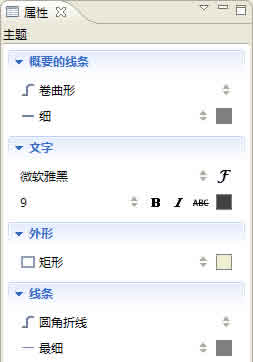

概要是用来为一个或者多个主题添加的文字性总结，从而更好地表达作者的意图。在XMind中也提供这样的一种功能。
用户可以很轻松地添加、编辑、以及调整XMind中的概要。方法如下：
添加新的概要：
- 选中目标主题，及需要被添加概要的主题。
- 下列方法均可实现添加：
- 在菜单选择"插入 > 概要"。
- 使用快捷键 "Ctrl+]" 。
- 点击鼠标右键打开右键菜单，选择 "概要"。
- 在概要主题中填入概要的内容。
- 同其他主题一样，使用"Tab"键，您还可以为概要主题添加子主题。
- 在概要的主题的范围的顶端和底端，会有调节范围用的滑块，选中之后拖动即可调节当前概要的选择范围。
修改概要的属性：
- 选中概要。
- 打开属性视图。
- 您可以在视图中调节下列元素：
- 概要线条的颜色，形状，样式。
- 概要主题的字体，线条，形状，结构等等。

删除概要：
- 选中概要：
- 点击"Delete"即可。
您可能还对下列内容感兴趣：